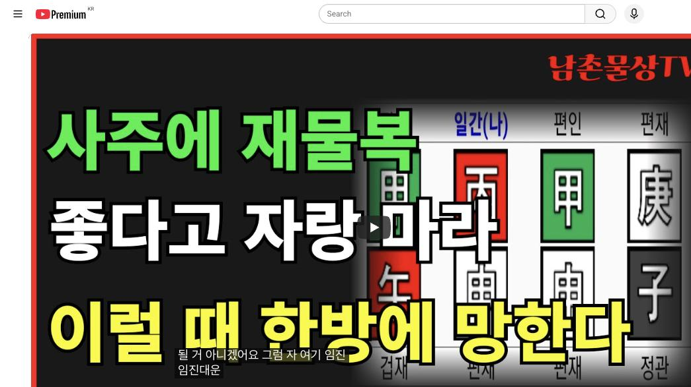

남촌물상TV 전체 문서 › 동영상 V0091
사주에 재물복 좋다고 자랑 마라, 이럴 때 한방에 망한다

| 문서 번호 | V0091 (동영상) |
|---|---|
| 영상 URL | https://www.youtube.com/watch?v=7A8om5YLKtc |
| 영상 ID | 7A8om5YLKtc |
| 게시일 | 2024-09-02 |
| 길이 | 25:13 (1513초) |
| 조회수 | 3,349회 (수집 시점 기준) |
| 카테고리 | Howto & Style |
| 자막 | ko (자동생성) |
| 수집 시각 | 2026-08-30 19:08 (KST) |
영상 설명 (YouTube 설명 원문 그대로)
사주에 재물복 좋아도 이럴 때 한방에 망할 수 있다 #사주풀이 #재물복 #재물운
전체 자막 (534구간 · 타임스탬프 클릭 시 해당 장면으로 이동)
[0:00]타고난 제목이 좋아도 그 시기와 쓰는
[0:03]적절한 시기를 퇴 갖지 못하면 실패할
[0:06]수밖에 없다는
[0:08]것을
[0:10]자이 일주의 경자 갑신
[0:14]갑오에 그러니까 여기에서 이제 제일
[0:17]보시면 이제 이런 사주들이 제복이
[0:21]좋다고 하죠 자 제복이 연결이 돼서
[0:23]쫙까지 연결되니까 제보 굉장히 좋다
[0:27]근데 없는게 뭐가 없어요 자 자 토다
[0:31]자 토다 얘기는 어 우리가 이제이
[0:35]병화일주 특징이 뭡니까 병화 일주는
[0:39]자기가 물위에 떠 있을 때 명예가
[0:41]오는 거고 또 재물은 다 경금을
[0:44]재물을 녹일 수 있는 거고 실제로
[0:46]보시면 그러니까이
[0:48]사람의 재물은 어디 있어요 재물은
[0:51]여기 있죠 국가 자리에 재물 있어요
[0:55]국가 재물 있다 근데 국가 자리에서
[0:58]재물이 신자 신 신장 연결이 쭉 돼
[1:01]있어요 그러니까 이런 사람들의 경우는
[1:04]재물복은 좋은데 또 문제가 있다지
[1:08]어떤 문제가
[1:09]있을까요
[1:12]새 자 첫째 제가 두 개가 있어 그
[1:17]이런 사람들 대부분 이제 어떤 거 두
[1:20]번 결혼할 수 있다 그 이혼할 소주가
[1:22]있다 자 이렇게 그 른 보시면 돼 자
[1:25]그다음에이 사주
[1:27]특성이에 토가 없다는 얘기는 우리는
[1:30]뭐예요
[1:31]토가 없는 것은 가지고 싶지네
[1:34]그러니까 자이 사람 꿈이 뭐 었습
[1:36]항시 땅 가지고 싶다 땅 가지고 자
[1:39]나무는 있겠다 건축물 가지고 뭔가를
[1:42]해보겠다 이런 생각을 항식 갖고 있는
[1:44]사람으로 눈에 보여야 됩니다 이게 예
[1:47]그니까 토다는 얘기는이 나무를
[1:50]키운다는 얘기는 부동산이 그럼
[1:53]부동산에 관련된 생각이 언제든지
[1:56]머릿속에 잔재 있는 사람이에요 이제
[1:58]그렇게 쉽게 이해하시면 된다 근데
[2:01]이제 그러면 자 내가 가장
[2:04]바라던이 재물이이 토가 언제
[2:08]오냐 자 어느 때 올까요 여기 오죠
[2:12]여기요 자 여기 여기에서 무자 대운에
[2:15]재운이 온다 아 참 신기하다
[2:19]아 그럼 우리들이 이제 봤을 때 어이
[2:23]사람이 여기에 전성기라는게 볼 수도
[2:25]있어요 이제 그러면 우리가 이제
[2:28]젊었을 때 직업과 나이 먹었 때 집
[2:31]후반기 전반기를 구배를 한번 해보자
[2:33]그 말이에요 그러면 이렇게 딱 한위
[2:37]반 나나봐요 40대 이전과 40대
[2:40]이후 근데 똑같아 거의 보면 단지
[2:44]이요요 병만 넣다 말이에요 그럼 자
[2:46]무슨 얘기냐
[2:49]전반전에는 나를 내가 금을 쓰는
[2:51]직업으로 살 거고 그 말이고
[2:55]후반전에서는 내가 금을 쓰이 목에
[2:58]관련된 꽃을 준다 쉽게 평화는 항시
[3:02]자기가 빛나는게 아니라 남을 나무의
[3:05]꽃을 편 역할 하기 때문에이 사람은
[3:08]부동산과 관련된 건축과 관련된이를 할
[3:12]수 있구나 하라고 눈에 들르셔야 한다
[3:13]그 말이에요 그 전반기와 후반기에이
[3:16]사람이 큰 타이틀을 놓고 봤을 때
[3:18]어떤 점이 가장 좋은 점이고 어떤
[3:22]점에서 문제가 오겠는가 먼저 한
[3:23]보시면 되지 자 그렇다고 봤을 때
[3:28]아 대운을 딱 보니까 무자 대운이
[3:31]왔네 그럼 자 무자 대운이 오면은
[3:34]어떤 일이
[3:35]벌어질까요 어떤 일이 그럼 자 생각해
[3:38]보세요 무토가 왔다는 얘기는 40대
[3:41]이전이 그죠 그럼이 토는 나무심는
[3:45]역할 여기 심어지게 만약에 토가
[3:48]만약에 여기쯤 있다 그러면 여기
[3:50]심어졌습니다 그래서 전반전과 후반전의
[3:53]차이점의 관계를 이해하셔야 된다 그
[3:56]말이야 그러면 내가 첫째
[3:59]직업은 재물을 취하는데 금에 대한
[4:02]재물을 했겠죠 그럼 우리가 이제에
[4:05]재화 관의 관법을 설명할 때 자이
[4:09]여기에서 자 재 관법을
[4:12]보면은 자 병화 가는 재는 뭐예요 자
[4:17]경금이었다지지 신금이 정신이란
[4:19]말이에요 그러면 우리가 이제 직업상
[4:23]봤을 때 어떻게 볼 거냐 그러면
[4:25]여기에이 경금을 내가 어떻게 해서
[4:29]재물을
[4:30]할 수 있냐가
[4:32]직업이지 그럼 제 한번 더이 다음에
[4:36]금의 재물은 뭐예요 목 있죠 갑이에요
[4:41]그러면 네가 일어날 수 있는 최상의
[4:44]일은이 금 금을 쓰는 직업의 일과
[4:49]목을 쓰는 직업으로 같이 할거다
[4:52]이것이 이제 핵심이에요
[4:54]그니까 제법으로 봤을 때 직업을 찾는
[4:58]방법을 한번에 찾 수가 있다
[5:01]그러니까이 사람은 지금 재물이 국가
[5:03]자리 있죠 그러면 국가 자리에 있다는
[5:08]것은이 재물이이 국가 자리에 재물이
[5:11]있으면 뿌리는 어디 있어 여기 있죠
[5:14]한계가 밑에 있어요 그러니까 이런
[5:17]사람은 공무원은 안 돼 공직은 바로
[5:21]국가 자리에서 이루어졌 때 공직이
[5:24]국가 자리의 밑에서 이루어진
[5:27]것은 공기업
[5:30]그렇지 않으면 그 대기업에서도
[5:34]어느한지 지역적인 관계 이제 이런
[5:37]쪽으로 갈 수밖에 없다 간단하게
[5:40]직업을 볼 수 있는 거예요 그 직업을
[5:42]찾는데 네가 초반에 이런 일 할
[5:45]것이다 이게 딱 정해진 거예요
[5:47]그러니까 우리들이 생각할
[5:50]때 병화가 갑목에 꼽혀 주고 이건
[5:54]부동산을 한번 생각할 거고 여기에
[5:57]실질적인 조직생활의 재물은 이게 었다
[6:00]그 말이에 경신이 알고 보면 그래서이
[6:03]사람은 그럼 내가이 국가 자리에서
[6:05]흘러간
[6:06]재물이이 금을 다른 직업이 뭐겠냐 그
[6:10]말이야 자 우리가 그럼 재경직 통이
[6:12]많죠 그 세무직을 거고 재경직 뭐
[6:16]저가 있죠 그러면 이제 이런 사람들이
[6:19]대부분이 공격 쪽에 일을 한다 또
[6:22]은행에 일을 한다 그러 은행면이
[6:25]사람이 은행에 근무 한단 말이에요
[6:26]그러면 자 은행에 근무해도이 사람
[6:29]어디 갈 냐 우가 짜내야 돼 그러면
[6:31]은행 직원들 하더라고 너 무슨 은행
[6:33]대이지 집을 수 있는 것은이 사람이
[6:36]뭐가 없어요 토고 모고 목과 금은 다
[6:40]있어 주택 공사지 주택
[6:52]은행이지만아요 그 이것을 그 여러분
[6:55]상시 어렵게 생각하지 말고 일차적인
[6:58]관계를 딱딱 집어서 내라 이거예요
[7:02]그러니까 우리들이이 사람은 재물이
[7:05]좋아요 근데이 사람이 모든 사람들이
[7:08]타고난 재물이 좋아도 그 재물 복을
[7:11]어느 시점에 내가 재로 쓰느냐가
[7:13]답이에요 근데 재물 복이 좋아도
[7:16]엉뚱한 그 대운에 써 불게 되면
[7:19]망하는 수가
[7:21]있어 자이 사람의이 사람 경우는
[7:25]재물이 40대 이제 이후로면 보 봐요
[7:30]여기에서 잘
[7:33]보세요이이 무자 대운이 온다는 얘기는
[7:36]무토가 갑목을 심어 줘도이 사람은
[7:38]항시 뭘 뭘 생각을 하고 거 있어요
[7:41]항시 마음의 심법을 생각하자 우리가
[7:44]무토가 갑목에 심어졌다는 부동산에
[7:47]관계된 일이 항시 하 엮 져요 그것이
[7:51]특징이에요 이런 사람한테는 그러기
[7:52]때문에 반드시 자기가 주택에 근무
[7:55]했어도 항시 머릿속에는 내가 뭔가는
[8:00]부동산이나이 건설에 관련된 쪽에
[8:02]머리를 항시 갖고 있다라고 이해하시면
[8:05]된다지네 자 그런데 중요한 것은
[8:08]갑목에 뿌리가
[8:10]없죠 전반전에는 갑목에 뿌리를 만들
[8:13]글씨가 없어요 후반전에 가야 여기서
[8:16]노순이 됐을 때 쉽게에서 우리는
[8:19]갑목에 꽃을 피 수 있는 역할이 돼
[8:22]안 돼 되죠 그러니까 후반전에 가서는
[8:26]네가 갑목에 꽃을 핀다는 얘기는 본래
[8:30]타고난이 자체에 땅이 없고 목 부리가
[8:34]없기 때문에 이런 사람들은 직접
[8:36]건설이나 이런 거 보다도 시행사 쪽에
[8:39]관계된 일을 많이 한다 자기가 토를
[8:42]땅을 가지고 다으면 직접 건축을 하지
[8:44]근데 사주에 없기 때문에이 사람들은
[8:47]시행사에 관련된 쪽에 일을 하고
[8:49]있다이 말이에요 그 이런 것을
[8:51]여러분들 자꾸 눈에 들어와서 상담할
[8:54]때 어떤 직업이 좋고 어떤 직업이
[8:56]이루어질 것인가를 쉽게 찾는
[8:58]방법을셔야 한다 그 말이 입니다 자
[9:01]그러면이 사람이 이제 차근차근 그
[9:03]설명을 드릴 건데 어이 사람이 가장
[9:07]그럼 전성기는 언제일까요 전성기
[9:09]언제일까요 어느 때가 전성기가
[9:11]좋을까요 3 40대 자 그러면 자 3
[9:15]40대 좋다
[9:18]여기에서 장점이 있고 단점이 생길
[9:20]수가 있어 자 기축 대운이 좋다
[9:23]한다고 생각하면은이
[9:26]사람은 여기에서 뭐가 생길 수 있는가
[9:28]한번 잘보세요 일단 이제 기토 한
[9:30]것은 갑기 합을 하겠지 그렇죠 자
[9:34]을목을 할 거 아닙니까 각기 합을
[9:36]을목이 되죠 을기 합을 할 거
[9:37]아니에요 그죠 얼개가 합불 한다는
[9:40]얘기는 경금이 뭘로 바뀌었어 신금로
[9:43]바뀌었다 그러면 신금이 것은 뭔가
[9:45]국가를 끌어당길 수 있는 힘 있지
[9:47]병화를 끌기 때문에 내가 합을 한다고
[9:49]말시켜서 국가 자리에서 끌어당길 수
[9:52]있는 일을 할 건데 내가 합을 해
[9:55]버어 내가 묶 긴다 그 말이에요 내가
[9:58]묶이고
[10:00]그러면 신 신금 경금의 뿌리가 을하
[10:03]신금이 됐는데 뿌리는 뭐예요 금
[10:09]요금이지만 이에 본인이 크게 사업을
[10:11]하면 실패하는 거예요 이것이 제
[10:14]핵심이야 그러게 어느 시점에서 네가
[10:18]사업을 해서 성공할 수 있는 길이
[10:20]어느
[10:20]때라면 어느 때 해야 된 시점을
[10:23]정확히 집어서 사업으로 성공을 할
[10:25]것이고 운이 좋다고 해서 근데 타고난
[10:28]운이 사주가 좋아요
[10:30]있 그것을 못하게 어느 시점에서
[10:33]선택하냐에 따라서 실패 여부가
[10:35]갈라진다고
[10:37]본다 자
[10:39]그러면은이이 대운이 어쩔까요 경인
[10:45]대운이
[10:47]설 자 이럴 때 봅시다 자 우리가 잘
[10:50]봐요 자 경경이 두 개야 경이 두 개
[10:55]그러면 자 칼 자루가 두 개요 왜 두
[10:59]개 되잖아요 두 개 돼 자 그러면
[11:02]생각해봅시다 쌍칼 대비를 잡고 있는
[11:05]거지네 그럼 이럴 때가
[11:08]자기가 직접적이 내가 한 건 아니잖아
[11:11]쌍카 칼 칼자 내가 진 것도 아니야
[11:15]다른 사람들이지고 있는 것을
[11:18]나는
[11:20]돈과 돈을
[11:24]잡고 나무에 꽃피는 역할만 해주면
[11:26]되는 거야 그러니까이 사람이 뭐예요
[11:30]쪽이지 그러니까 우리들이 이제 이런
[11:32]것을 봐주고 직접 건설 하느냐 안
[11:34]하느냐 차이가 있다는 것을 그렇게
[11:36]구별할 수 있는 거예요 직접 본인이
[11:39]감목 일간에 경금을지고 있다면 칼
[11:41]자어서 건설을
[11:43]하는데 두 칼을 두 칼과 칼 자를
[11:47]가지고 두 개가 움직이는데 자기는
[11:50]꽃만 펴주면 돼 그 말이야 근데 돈은
[11:53]누가 갖고 있어 내가 이때 성공을
[11:57]해야 되는 거예요 근데 아까이 기축
[12:00]대운에이
[12:01]사람은 운이 빨리와서 한 거야 자
[12:05]너무 빨리 왔어요 그래서 다니던
[12:08]직장을 그만두고 그 기 기운이 오니까
[12:11]그렇게 흘러가는데 한번 사주의 대운을
[12:14]어 때 보세요 자 자 무자 대운이
[12:18]왔어요 무자대운
[12:20]자 무자 대운이 왔으니까 자 자기
[12:24]이제 조직생활 해서 조직생활 해서 어
[12:27]때가 상시 제가를 뭘 보라고 그랬어
[12:31]대운을 볼 때 무죄면 어디를 찾으라고
[12:33]했어 무하고 관계된 그 연도를
[12:36]찾으라고 했잖아 그럼 연도 찾을 때
[12:39]어디야 9살 무인이 자 무인이 오니까
[12:43]어떤 생각을 했어 자 무인이 있다고
[12:45]오니까 여기에 본인이 생각할 때
[12:48]나무가 심어질 수도 있고 뿌리도
[12:50]왔으니까 뿌리가 왔으니까 어순도 되고
[12:53]그러니 그러이 사람이 생각을 달리는데
[12:55]이때는 사실 진급 캐스 그래요 회사
[12:57]해서 공직 진급 케스라
[13:00]그래서 진급을 했어 했는데 마침
[13:04]자기가 내가 물어봤어 이때 너
[13:06]진급하면 좋다니까 그때 제가 사업
[13:08]길로 들었는데요 너 사업 길로 망해
[13:12]그러니까 어떻게 하세요 그래 자 이때
[13:14]저면 망할 수밖에 없는 거예요 자기가
[13:17]진급의 관계에서 조직 생활에서 진급을
[13:21]하고도 충분히 할 수 있는 여건이
[13:23]되는데 눈에 보이는게 이제 뭐가
[13:25]보이냐 땅이 와서 나무가 심어지는 그
[13:28]본인이 그리고 그리든
[13:30]왔잖아 그러니까 이제 마음이 달라지기
[13:32]시작한 거지
[13:34]그러면이 사람이 이제에 이노를 하게
[13:37]되면은 누가 꼽혀 내가 꼽혀 줘야
[13:40]되잖아 그 마음이
[13:43]어디로가 자기가 꽂히니까 내가 내가
[13:46]뭘 해야 되겠다고 생각하니까 근데
[13:48]물어봤어 왜 그러면 너 회사를 그만
[13:50]놓냐
[13:51]물어봤더니 태사 자지가
[13:54]그 저조합 있잖아요 건설 조합에
[13:58]여기를 건축을 투자 거기서 자기가
[14:02]배당을 거기 투자를
[14:04]했는데에 그 관계에서 이상에 그
[14:07]조합장이 문제가 생겨서 자기가 조합장
[14:10]직무대리 역할 하게 되더라 그 말이야
[14:13]그래서 회사를 그만두고 바로 그길로
[14:15]뛰어든 거예요 자 그런데 그것까지는
[14:18]좋았어요 돈 벌 수 있는 길이
[14:20]있으니까 좋아 그래서 뛰어드 성공을
[14:22]하겠지 그러 그 다음대 볼까요 여기서
[14:25]보면 기축대
[14:28]봐봐요 자 기축 대운에 보면 기고
[14:31]만장 하겠지 왜 그런가 잘 보세요
[14:35]기축 대운에 경진년 이죠
[14:38]경진년 경진년 경진년이 몇 살이에요
[14:43]경진년 예 40 몇 살이야
[14:47]마흔하나 팔팔 뛸 때 아니에요 잘 봐
[14:50]보세요 자 경진이 왔으니 양쪽에 칼이
[14:54]탁 잡힐까지 칼자루가 그지가 이제
[14:57]저는 저는 그 어어 소위 에 조합이
[15:00]행사지 결과죠 자기는 거기 들어가서
[15:03]본인이대 업무 하고 있었단 말이야
[15:04]그러니까 보니까 진토가 신자 신자까
[15:07]유통이 돈이 막 흘러가잖아 그러니
[15:09]그러니 돈 돈도 걸어 짓고
[15:11]좋았겠죠 근데 그 다음 연도로 하면
[15:14]이제 뭐예요 신사 신사 그렇죠 자
[15:18]신사가 되면은 신금이 와서 나를
[15:21]하보라 해버려 그러면 약간 제지한
[15:24]기분이 들 거 아니에요 그러면 자
[15:26]여기에서 내가 묶인다는 개념이죠
[15:30]합을 하게 되면 내가 묶기는 거예요
[15:32]그럼 내가 양쪽에 시용 사 굉장히
[15:34]자꾸 태양을 갔다가 짓고 흔들다가
[15:37]합으로 묶이다 보니까 이제
[15:39]문제가 생기 시한 거야 그러면 자 그
[15:41]말은 뭔 얘기냐 우 이거 해석할 때
[15:44]잘 생각하셔야 돼 그 사람이 이제
[15:46]상담할 때 여러분들이에 내가 그 그
[15:48]대응을 업무하고 있습니다 근데 이때
[15:51]너가 뭔가를 너희가 묶였을 건데 어느
[15:54]네가 그 사람이 그래요 어느
[15:55]조합장이나 건책 주택 좀 하게 되면은
[15:59]반드시 아군과 적군이 생기는 거예요
[16:03]꼭 있어 그래서 거기 묶겠다는 얘기는
[16:06]뭔가 나한테 공 공격을 들 수는
[16:08]사람이 많다는 얘기예요 그래서 나를
[16:10]구속하고 나를 뭔가를 그 대응할 수
[16:13]있는 존재들이 많이 생겼을 거
[16:14]아니에요 그럼 적들이 많이 생긴 거지
[16:17]자 그래서 본인이 그런 일이 겪 얘기
[16:19]그렇다 얘기야 그래서 이제 신사
[16:22]보면은 여기서 사가 신사가 온다
[16:26]신사는 자 신사의 개념 돼요 근데
[16:30]이거은 사유축 개념도 될 수가 있어요
[16:32]내가 자기 하 묶여 있기 때문에
[16:35]보세요이 합으로 묶이면
[16:39]합해도 금은 금이라 그랬지네 금은
[16:42]합해도 변하지 않아요 이게 오행의
[16:45]특징이야 모든 오행은 다 변하지만
[16:49]금은 합을 하거나 을경 합을
[16:51]해도 금은 금이야 뭐지 그럼 자 금이
[16:54]묶긴 뿌리가 유금이 자우이 돼 안 돼
[16:57]된다
[16:59]그래서 결과적으로이 사람은 이때고
[17:02]고비를 한번 겪어야 된다 그 말이지
[17:04]그러니까 그럼 요때 복 우리가 뭐라냐
[17:06]을사 그 신사 전에 너 한번 고통을
[17:09]심하게 받았지 않냐네 맞습니다 주
[17:11]사람들이 공격하고 나를 여러 가지
[17:13]의미도 했을 거고 그랬을까지 했어요
[17:15]조합장을 하게 되면 뭐 돈을 먹었냐
[17:18]안 먹었냐 하고 있을까지 법적인 문제
[17:19]야이 되겠지 이제 그러한 관계성이
[17:22]있을 수 있다 자 그래서이 사람이
[17:25]보면은
[17:26]운이 신사 임모 잘 갔어요
[17:29]그럼 이제 45대 원에 이때 갔을
[17:32]때이 사람 돈을 그 좀 새개 겠지
[17:34]그래놓고 40 갑 10년에 갑신년
[17:38]이때 돈을 어지기 시작한 거예요 자
[17:41]갑목이 몇 개 됐어요 갑신 세 개
[17:43]됐지 세 개가 하나의 경금을 채어
[17:46]그러면이 사람이 세 계가 하나가
[17:49]된다는 얘기는 세개을 통합적지가 다
[17:53]관장할 수 있었고 돈을 벌 수 있다는
[17:55]얘기는 아까 여기에 재물이 다 내가
[18:00]다 취할 수 있다는
[18:02]얘기에요 그래서이 사람이 어느 뭐
[18:05]가양동에 실버타운을 본인이 건축하게
[18:09]돼 있었다 그래서 그 사람이 그걸
[18:11]잡았어
[18:14]잡았는데에 사람이 그때 그저 내가 볼
[18:16]때는 거기다 투자를 한게 아니야 돈은
[18:19]이런 거 있어요 제에서 팍 운이 안
[18:22]좋 때 투자하면 실패하게 돼 있는
[18:24]거거든요 그러면 이런 사람들이 거기
[18:26]투자를 하니까 20억 을 자기 총
[18:30]20억을 가지고 억대로 움직이는
[18:32]사람이 됐다 그 말이야 쉽게해서
[18:34]그러니 그것을 보고만
[18:38]있겠어요 반드시 뭐가 붙지 그래
[18:42]자기가 75% 지을 가지고 있었고
[18:44]직원이 25%을 가지고 있었는데 그
[18:47]직원을 농가에서 모펀드 회사가 차고
[18:50]뒤에서 2년 동안 조작을 한 거예
[18:53]그래서 그걸 엎어버린 거야 직 과학
[18:56]하고 그 우리가 이제 번 사람 많이
[18:59]있잖아요 아 기업 사장들 이제 이런
[19:02]사람들이 아 가만히 보니까 너
[19:04]20억을 가지고 1천억을 움직이고
[19:06]있네 아 이것 봐라 생각이 들 거죠
[19:09]요것도 이제 끼어드는 거예요 그러면
[19:10]이제 소위 기업 사냥꾼이 끼어들게
[19:13]되면 거기에 누구를 잡아야 돼 나는
[19:17]75% 가지고 있어도 25% 집을
[19:18]가지 놈을 잡아야 될 거 아니에요
[19:20]그게 직원이 배신하게 된 거지 이렇게
[19:22]해서 한께 다 거지가 된 사주가 돼
[19:25]그래서 망하게 된다 그 말이야 축토가
[19:28]험 맞죠 그래서 우리는 아 이제 이런
[19:31]상담 하실 때 여러분들 문제는 뭐냐면
[19:34]재운이 아무리 사람이 타고난 제복이
[19:36]좋아도 그 시기와 쓰는 적절한 시기를
[19:39]택하지 못하면 실패할 수밖에 없다는
[19:42]것을 알 수가 있다 그 말이에요
[19:44]그래서 여러분들이이 그 돈 많은 사람
[19:47]상담도 해보고 많이 해볼 거예요
[19:49]해보시면 이러한 관계성을 잘 보시고
[19:52]해야 돼 그러면이 사람은 끝까지
[19:55]미련을 버려 못 버려 못 버리는
[19:57]거지 자 그러 지금에 어디 대원에 와
[20:00]있어요 자 여기 와 있고 경인 대원회
[20:04]한번 볼까요 경인 대원회 자 경인
[20:06]대원회 50대이 때죠 이때 했어야
[20:09]되는
[20:10]거예요 자기가 투자를 할 때 이때 건
[20:14]해야 되는 거예요 자 경인 대운은
[20:17]쌍칼을지가지고 있다 여기에도 꽃히고
[20:20]저기도 필 수 있는 역할이 되는
[20:21]거예요 그러니까 능력 발휘가 될 건데
[20:24]기년회 사업을 시작해서 결과과 대운에
[20:28]시작해서이 사람 실패 느을 수밖에
[20:30]없다 이것이 결론이에요
[20:32]그러니까 이런 사람들의 특성을 우리가
[20:34]잘 보셔야 돼요 너 저 사주만 원국이
[20:37]재물이 좋다고 해서 그 재물을 사람이
[20:39]지키느냐 못 지키느냐 관계예요 아무리
[20:42]사람이 원국의 재물이 좋아도 그
[20:44]재물을 감당하지 못하면 그거는 내가
[20:47]실패할 수밖에 없는 것이 타고난게 알
[20:49]수 있는 거예요 자 그러니까 이때
[20:52]만약에 우리가 경인 대운의 경인 그
[20:55]대운의 사업을 했다 바 얼마나 좋아요
[20:59]경경 양쪽에 칼을지고 있지 그러면
[21:02]나는 뭐예요 내가 손안 들고 나무에
[21:06]꽃만 피면 되는
[21:07]거예요 그러면지지 원술이 탁 되잖아
[21:11]그럼 말년에 가서 내가 시행사 가지고
[21:13]움직였어 충분하게 돈을 많이 벌 수
[21:15]있는 사람이 되는 거예요 그게 그
[21:18]기회를 잘못 선정해서 실패가 많지
[21:21]근데 자이 신묘 대운이 지금 와
[21:24]있잖아요 그죠 신묘 대운이 자 신묘
[21:27]대운은이 나한테 좋은 데냐 안 대운이
[21:31]안 좋죠 눈에 들으시죠 자 내가
[21:34]묶여네 첫째 내가 묶이면 지지에 묘가
[21:37]있고 자가 있고 오화가 있어 그러면
[21:39]아까 합이 된는데 유금을 내가
[21:43]신경 웃기면 뿌리가 유금 아니에요
[21:45]자오묘유 딱 제대로 떨어져 거야 우리
[21:47]물상 로에서는 자오묘유 결정적인
[21:50]순간이 되면 거의 좋은 일이
[21:53]없어요 그게 세 우리가 고전에 생각할
[21:56]때 뭐예요 도화살이 있고 쩌니까 쪽
[21:59]헛소리만 하고 아무 의미 없어요 삶을
[22:01]살아 나가는 데는 도화살의 문제가
[22:03]아니라 내 사업과 내가 움직일 수
[22:05]있는 여건이 어떻게 조성되는 가를
[22:07]실패할 수 있는 요인이 뭐가 있는가를
[22:09]찾아봐야
[22:10]된다 그래서 굉장히 고통을 많이 겪고
[22:13]있어 그 자기가 지금까지 사업을
[22:15]하면서도 어떤 소송이 들어온 것도
[22:18]있고 여러 가지 복잡성을 뛸 수밖에
[22:19]없는 거예요 자 그러면 내가이
[22:22]사람한테 늦지만 실망을 줄 수 있는
[22:25]희망을 줄 수 있는 것이 한 있어야
[22:26]될 거 아니겠어요 그럼 자 여기 임진
[22:30]임진대운 자 임진대운 어떨까요 좋아요
[22:33]자 좋죠 자이 물이 왔네 자 물이
[22:37]왔다는 얘기는 쉽게에서 뭐예요 첫째
[22:39]병화는 어디에 뜨기를 좋아해 임수
[22:42]임수를 한다 그럼 나의 명예 올 수
[22:44]있고 진이 온다는 얘기는 뭐예요
[22:46]신자진 된 거죠 그죠 신자진 어떻게
[22:50]돼 경구에 뿌리가 있으니까 신자이
[22:53]되는 겁니다 그러면 자 내가 물 위에
[22:55]떠 있고 금이 물에서 놀아주고 그
[22:57]재물을 내가 치할 수 있는 이 대운이
[22:59]마지막 그나마 오기 때문에이 사람은
[23:02]나중에 그래도 괜찮은 여건이을 수
[23:05]있다 참고 견디라 지금도이 사람은 그
[23:08]건설업을 지금 하고 있습니다 그래서
[23:10]상시 경제적으로 쪼 달리고 뭐 어
[23:14]여러 고통을 있겠죠 참고 이겨 나가라
[23:17]된다 이것이 이제 소이 사람한테 줄
[23:19]수 있는 희망이 71대 운이에요 그게
[23:21]늦게 오더라도이 사람은 이때 한번 딱
[23:25]여건이 되면이 사람 크게 성공할 수
[23:27]있어 그데이 사람이 어디 사고 있냐
[23:30]충청도 기지 아 오케이 그래서 내가
[23:33]오케이다 넣 오케이 그중에서 어디
[23:35]세종이 사고 있어 태양이 밝아질 때
[23:38]그 너는 성공할 수 있다라고 저는
[23:40]확신합니다 이분은 나중에 70일 되면
[23:43]확신하게 자기가 고생했던 대가의
[23:58]운이 좋아진다는 얘기는 한 번에
[24:00]좋아진 거야 그 전부터 차근차근
[24:03]좋아지기 때문에이 사람은 성공할 수가
[24:06]있다라고 본다 그래서 여러분들이
[24:07]이제에 특히 이제 우리들은 결혼시기
[24:11]또 이혼한시기 또 사업한시기 이런 걸
[24:13]정확하게 잘 볼 수 있는게 우리
[24:15]무상도 있기 때문에 확실한 답을
[24:17]가지고 여러분들도 아시면 돼 아셨죠네
[24:20]좀하세요 예 건강은 어때요 자 건강
[24:23]사람 사주가 청하지 사람은 청하해 자
[24:27]그런데 그런데 금이 많네 금이 많은
[24:31]것은 많은 것만큼 내가 안 줄 수
[24:33]있어요 그러니까 자 예이 사람 술을
[24:35]잘 먹는 사람이요 어 그러니까 아
[24:38]술을 잘 먹은 사람 치고 어디가 제일
[24:40]빨리 부서질까 목이 약하잖아 그래서
[24:43]관이 안 줄 수 있다 이게 이게 그
[24:46]의학적으로 봐도 어느 부분이 문제가
[24:48]되면 어느 부분이 안 좋다는 것을 알
[24:50]수 있게 설명해 드리면 돼요 안
[24:52]먹으면게 토가
[24:54]없는데 위는
[24:56]괜찮아요 토가 없어도 탁수가 안 되면
[24:59]탁수가 안 되면지 탁수 안 되면
[25:01]사람이이 사람이 탁수 짓을 계서
[25:03]행동을 하고 여기 탁수 자 축토와
[25:06]진토가 만날 때 응 이때가 탁수 응
[25:09]또 질 또 물어볼 거 자 없으면
[25:12]여기까지
칠판 원국 판독 (영상 프레임을 AI가 시각 판독 · 원판 대조 필수)
미확인
천간
甲
천간
丙
천간
甲
천간
庚
지지
午
지지
申
지지
申
지지
子
판독 신뢰도: 중간
판독 노트: 화면캡처 슬라이드(甲午 丙申 甲申 庚子), 十神 라벨이 일간과 불일치해 예시용 차트 추정 · 시점 22:30 · 해당 장면 보기↗
구분 불명판독 신뢰도: 중간
판독 노트: 동일 원국 후속 프레임(판서 진행 상태). 8자는 대표 판독 참조. · 시점 0:40 · 해당 장면 보기↗
구분 불명판독 신뢰도: 중간
판독 노트: 동일 원국 후속 프레임(판서 진행 상태). 8자는 대표 판독 참조. · 시점 15:44 · 해당 장면 보기↗
구분 불명판독 신뢰도: 중간
판독 노트: 동일 원국 후속 프레임(판서 진행 상태). 8자는 대표 판독 참조. · 시점 18:36 · 해당 장면 보기↗
자막은 YouTube에서 제공하는 한국어 자동음성인식(ASR) 트랙의 원문입니다. 고유명사·한자 용어·숫자 표기에 자동인식 특유의 오류가 있을 수 있어, 원문을 가능한 한 그대로 보존했습니다. 위에 칠판 원국 판독 섹션이 있는 영상은 화면 프레임을 AI가 시각 판독한 것으로 신뢰도 표기를 확인하고, 없는 영상은 화면 도표가 문서에 포함되지 않습니다.